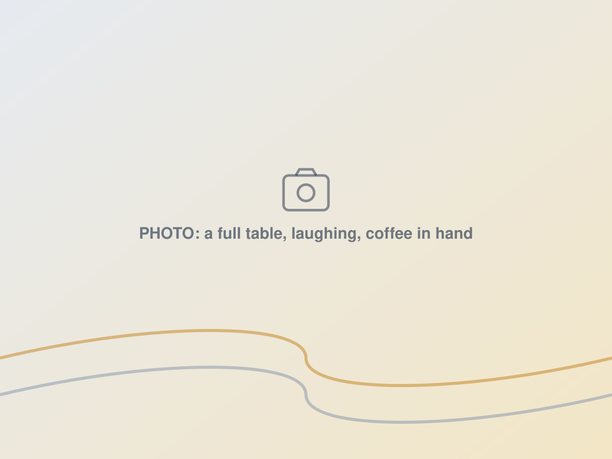
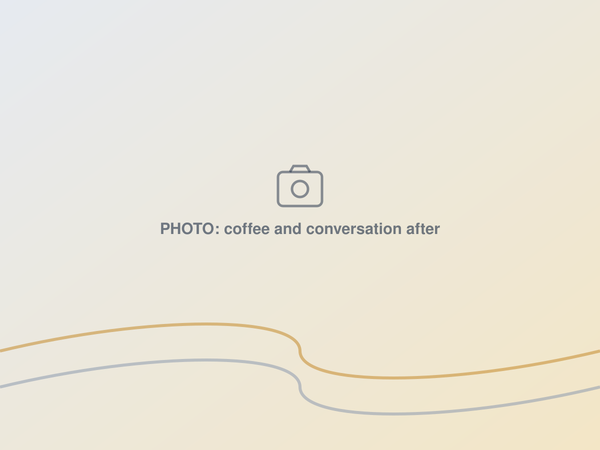
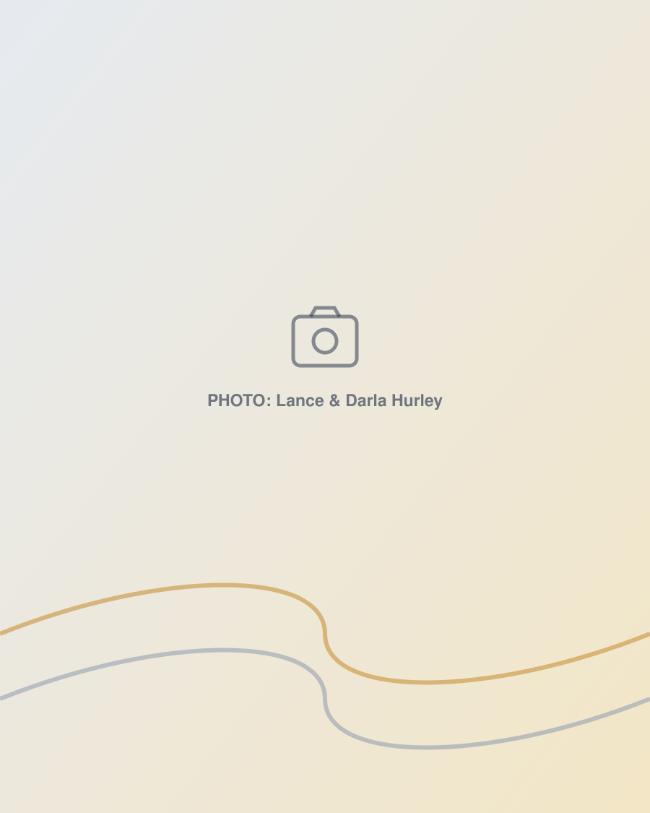

The best is still ahead.
Grey Wave is a church built for the fourth quarter of life. Songs you know by heart, teaching you can follow, communion every week, and friends who notice when you're missing.

Grey Wave exists to help people over 55 thrive in the fourth quarter of life: with Jesus, with each other, and with something worth getting up for.
Faith that still grows
Whether you've followed Jesus for sixty years or never opened a Bible, there is more for you here. Plain teaching, honest questions, and a God who is not finished with you.
Friends who show up
Loneliness is the quiet epidemic of later life. Here, people know your name, notice when you're missing, and come to the hospital when the news is bad.
Purpose that outlasts you
You carry decades of skill, stories, and faith. Retirement doesn't retire any of it. We'll help you put it to work in the lives of grandchildren, neighbors, and people who need what you have.
"They will still bear fruit in old age; they will stay fresh and green."
Psalm 92:14Your first Sunday, without the guesswork.
One hour. Daytime. No dress code. Level entrance and close parking. Someone will meet you at the door, get you a coffee, and show you where everything is.
- Songs you know, sung at a volume you can join
- A message you can follow, about 25 minutes
- Communion every week, open to all who follow Jesus
- Large print, clear sound, walkers and wheelchairs welcome
- Nobody singled out, nobody asked for money
- Rides available if you ask

Can Jesus accept me?
For anyone who thinks they've been away too long. Part of our fall series, The Fourth Quarter.
Miss a Sunday, or want to hear it again? Every message is online by Monday. Share it with someone who won't walk into a church yet but might press play.
Get it on the calendar.
Bring-a-Friend Sunday
Think of one person who used to go to church and stopped. Ask them. Coffee cake included.
Baptism Sunday
It is never too late. Talk to any elder or fill out the form and we'll walk you through it.
Thanksgiving Meal
A full table, no cooking required. Bring your family, bring a neighbor who'd otherwise eat alone.
Sunday is the front door. Here's the rest of the house.
Groups
Weekday Bible studies, men's breakfast, women's coffee, and a grief group that meets you where you are.
Find a group →Serve
Greet, make coffee, drive a neighbor, visit a shut-in, run the sound. Sixty years of skills don't retire.
Join a team →Prayer & care
Send a prayer request, ask for a hospital visit, or a meal. Someone reads every one.
Ask for prayer →Give
New churches are built by the people who believe in them. Give online in under a minute, or by mail.
Give →
Lance has spent 45 years starting churches. This one is for his own generation.
Lance Hurley planted his first church in 1981 with twenty people. Since then he has planted two more, led Ignite Church Planting, and watched too many friends drift from church in retirement because nothing new was built for them. So he and Darla decided to build one.
Come see for yourself this Sunday.
No pressure, no dress code, no one will single you out. Just an hour with people who are glad you came.